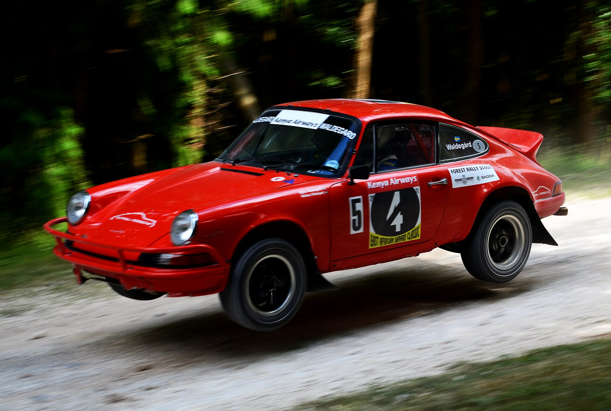
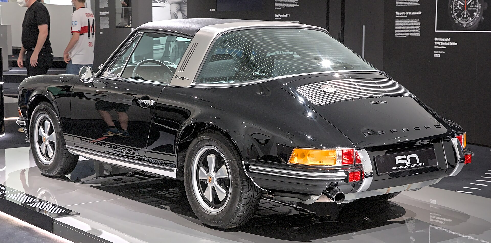

THE FORME JOURNAL

A moving archive of the automobile VOL. 01 — THE ICONS
THE ART OF THE AUTOMOBILE
Made to
move us.
An ongoing study of the machines,
moments and people that stay with us.
SCROLL TO WANDER ↓
Some machines stay with us long after the road ends. For their shape. For what they made possible. For how they made us feel.
FORME JOURNALISSUE Nº 01
THE COLLECTION — 001
Forms that remain.
Six studies in character,
craft and consequence.
CHOOSE A STORY ↗

THE ARCHIVE — A LIVING HISTORYEvery era leaves
A STUDY OFEvery era leaves
a mark.
From hand-built beginnings to tomorrow's dream machines. The archive traces the ideas, people, and moments that changed the shape of the road.
WANDER THROUGH THE YEARS ↗MOVING FORM ARCHIVE IMAGE · ALEXANDER MIGL · CC BY-SA 4.0 ↗